Berichte erstellen.
Automatisch.
Der Report & Insights Agent zieht Daten aus Ihren Systemen, analysiert sie und erstellt fertige Berichte — ohne manuelle Aufbereitung.

Wichtige Entscheidungen warten auf Berichte die noch niemand erstellt hat. Der Report Agent liefert sie automatisch — pünktlich, vollständig und ohne manuellen Aufwand.
Drei Kernvorteile
Automatische Datenabfrage
Der Agent zieht Daten aus allen verbundenen Systemen — ERP, CRM, Datenbanken und APIs — vollautomatisch und nach definiertem Zeitplan.
→ Keine manuelle Datenaufbereitung mehr
KI-gestützte Analyse
Die gesammelten Daten werden analysiert — Muster, Trends und Anomalien werden erkannt, signifikante Abweichungen hervorgehoben und kommentiert.
→ Wichtige Erkenntnisse sofort sichtbar
Automatischer Versand
Der fertige Bericht wird automatisch an die definierten Empfänger versendet und im System archiviert — pünktlich, ohne manuelle Schritte.
→ 90% weniger Zeit für Report-Erstellung
Ihr Tool nicht dabei? Wir integrieren uns in nahezu jeden Stack.
Wie es funktioniert
Der Agent in Aktion
Daten werden abgerufen
Der Agent zieht Daten aus allen verbundenen Systemen — ERP, CRM, Datenbanken und APIs — vollautomatisch und nach definiertem Zeitplan.
KI analysiert
Die gesammelten Daten werden analysiert — Muster, Trends und Anomalien werden erkannt, signifikante Abweichungen hervorgehoben.
Bericht wird erstellt
Der Agent erstellt den fertigen Bericht nach Ihrer vordefinierten Vorlage und Struktur — inklusive Visualisierungen, ohne manuelle Formatierung.
Versand & Archivierung
Der fertige Bericht wird automatisch an die definierten Empfänger versendet und im System archiviert — pünktlich, ohne manuelle Schritte.
Ergebnisse
Was Sie gewinnen
weniger Aufbereitungszeit
Automatisierungsgrad
durch Automation
Funktionen
Was der Agent für Sie tut
Daten-Extraktion aus allen Systemen
Zieht Daten automatisch aus allen verbundenen Systemen — ERP, CRM, Datenbanken und APIs — und konsolidiert sie in einer einheitlichen Datengrundlage.
Trend- & Anomalieerkennung
Analysiert Daten automatisch auf Muster, Trends und Anomalien — signifikante Abweichungen werden hervorgehoben und kommentiert.
Bericht nach Ihrer Vorlage
Erstellt fertige Berichte exakt nach Ihrer vordefinierten Vorlage und Struktur — konsistent, professionell und ohne manuelle Formatierung.
Geplanter Versand
Versendet Berichte nach einem frei definierbaren Zeitplan automatisch an die richtigen Empfänger — täglich, wöchentlich oder monatlich.
Historischer Vergleich
Vergleicht aktuelle Zahlen automatisch mit Vormonat, Vorquartal oder Vorjahr — inklusive berechneter Veränderungsraten und Kommentar.
Flexibler Export
Exportiert Berichte als PDF, Excel oder überträgt sie direkt in Ihr System — im richtigen Format für jeden Empfänger und jeden Anwendungsfall.
Bereit für automatische Berichterstellung?
Lassen Sie uns besprechen, wie der Report & Insights Agent Ihre Berichtsprozesse vollständig automatisiert — und was das für Ihr Team bedeutet.
Jetzt anfragen →15 Min · Kostenlos · Unverbindlich